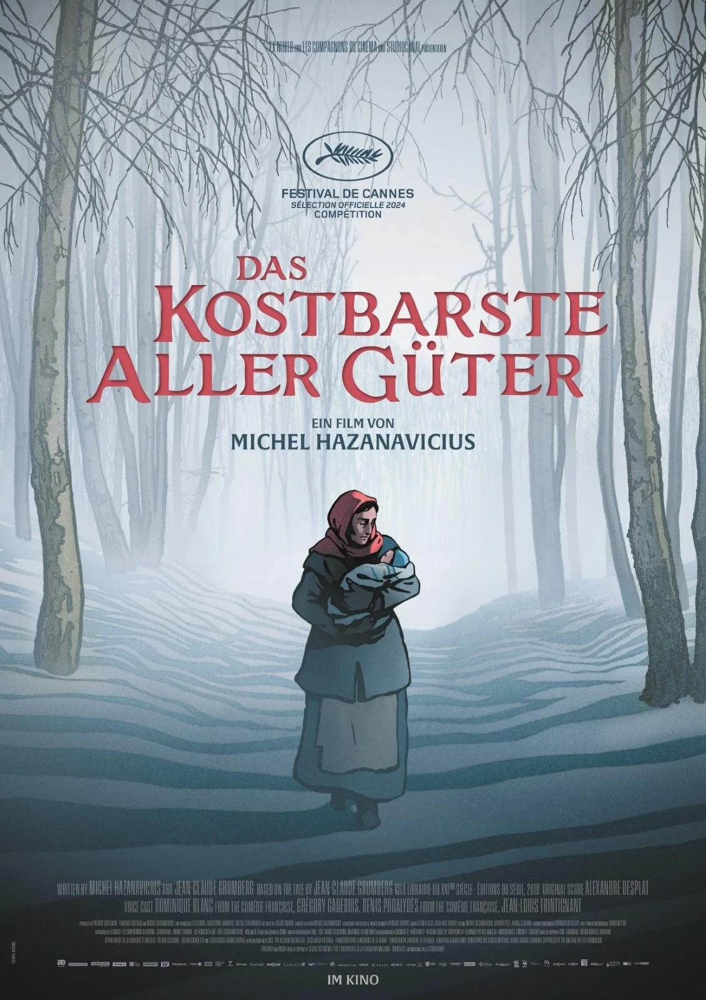
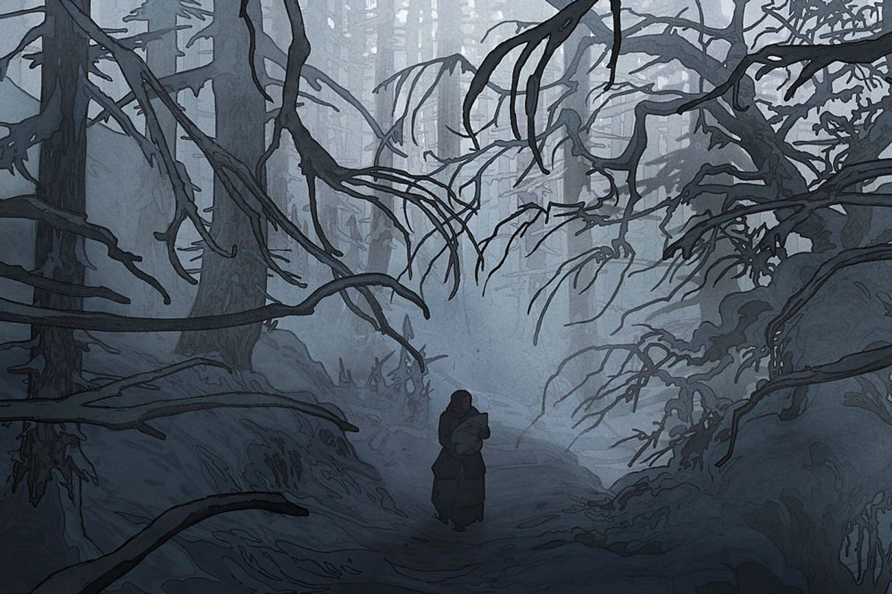
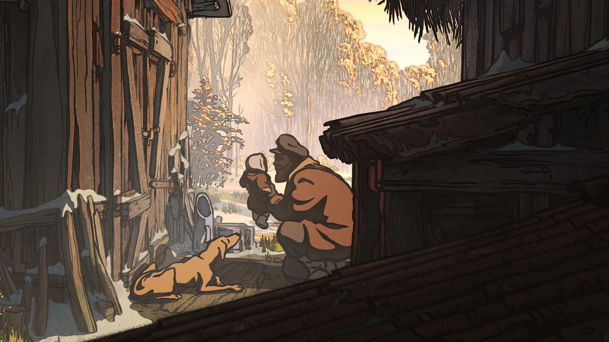

2024 · Regie: Michel Hazanavicius · Drehbuch: Michel Hazanavicius & Jean-Claude Grumberg
Genre: Animation / Drama · Laufzeit: 81 Minuten
☕ Lesezeit: ca. 3 Minuten

Die Bibliothek mausert sich langsam zu meiner liebsten Filmquelle. Nach Strafpark ist das schon der zweite Film von dort, der mich richtig erwischt hat. Diesmal hat allerdings meine Freundin gestöbert und Das kostbarste aller Güter mit nach Hause gebracht, im Original La Plus Précieuse des marchandises. Ich hatte von diesem Film vorher noch nie gehört. Dabei lief er 2024 im Wettbewerb von Cannes, stammt von Michel Hazanavicius, der für The Artist mit dem Oscar ausgezeichnet wurde, und kam im März 2025 auch bei uns ins Kino. Trotzdem ist er komplett an mir vorbeigegangen, und ich vermute, nicht nur an mir. Grund genug, ihm eine eigene Review zu widmen.
Viel verraten will ich nicht, deshalb nur die Ausgangslage. Zweiter Weltkrieg, ein tief verschneiter Wald irgendwo in Polen. Dort leben ein armer Holzfäller und seine Frau, geplagt von Hunger und Kälte. Mitten durch ihren Wald führt eine Bahnstrecke, auf der regelmäßig Güterzüge vorbeirollen, und die Frau wünscht sich jeden Tag, dass einer davon etwas für sie dalässt. Als sie eines Tages an den Gleisen Holz sammelt, liegt tatsächlich etwas im Schnee: ein Säugling, aus einem der Waggons geworfen. Wohin diese Züge fahren, wird im Laufe des Films immer deutlicher. Ihr Ziel ist Auschwitz.
Was sich daraus entspinnt, ist eine zutiefst emotionale Geschichte über Ressentiments, über persönliches Wachstum, über den Wert eines einzelnen Lebens und über Liebe an einem Ort, an dem man sie am wenigsten erwarten würde.

Was mich sofort gepackt hat, ist der Ton. Der Film beginnt wie ein Märchen: Es war einmal ein armer Holzfäller und seine arme Frau in einem großen Wald. Das klingt nach Grimm und ist genau so gemeint. Hazanavicius erzählt mit der Schlichtheit eines Kinderbuchs, ohne dabei je kindisch zu werden. Und weil der Einstieg so sanft ist, trifft es umso härter, wenn nach und nach klar wird, durch welche Wirklichkeit dieser Märchenwald eigentlich führt.
Die Figur, die mich am meisten beschäftigt hat, ist aber der Holzfäller. Am Anfang will er das Kind nicht haben. Für ihn gehört es zu den „Herzlosen“, wie er die Menschen in den Zügen nennt, und er macht keinen Hehl daraus, was er von ihnen hält. Das ist unangenehm anzusehen, gerade weil es so beiläufig daherkommt. Der Film zeichnet ihn dabei als einfachen, verbitterten Mann, der die Vorurteile seiner Zeit ungefragt übernommen hat.
Und dann verändert ihn ausgerechnet dieses kleine Bündel. Wie und wohin dieser Weg führt, verrate ich nicht, aber sein Wandel ist für mich das eigentliche Herz des Films. Er passiert ganz leise, ohne große Rede und ohne kitschige Läuterungsszene. Er wächst an dem, was er zuerst abgelehnt hat. Damit ist er eine der berührendsten Filmfiguren, die mir in letzter Zeit begegnet sind.

Das kostbarste aller Güter ist ein kleiner Film über ein riesiges Thema. In gerade einmal 81 Minuten erzählt er von Hass, davon, wie man ihn überwinden kann, und davon, was ein einzelnes Leben wert ist. Leicht macht er es einem nicht, ohne Hoffnung lässt er einen aber auch nicht zurück. Mich hat er tief berührt. Dass er bei uns so wenig Beachtung gefunden hat, finde ich ehrlich schade. Wenn ihr ihn in der Bibliothek oder auf DVD entdeckt: Greift zu.
Meine Wertung: 9/10. Ein Märchen, das lange nachhallt.
Wem Das kostbarste aller Güter gefallen hat, dem empfehle ich: Die letzten Glühwürmchen (1988), Wenn der Wind weht (1986) und Das Leben ist schön (1997).